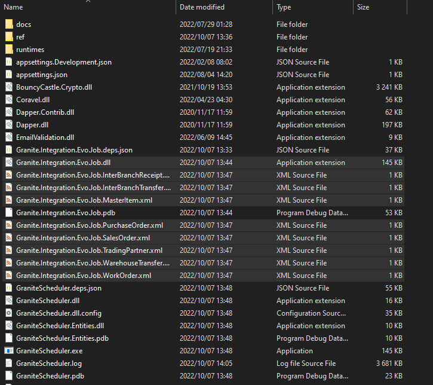
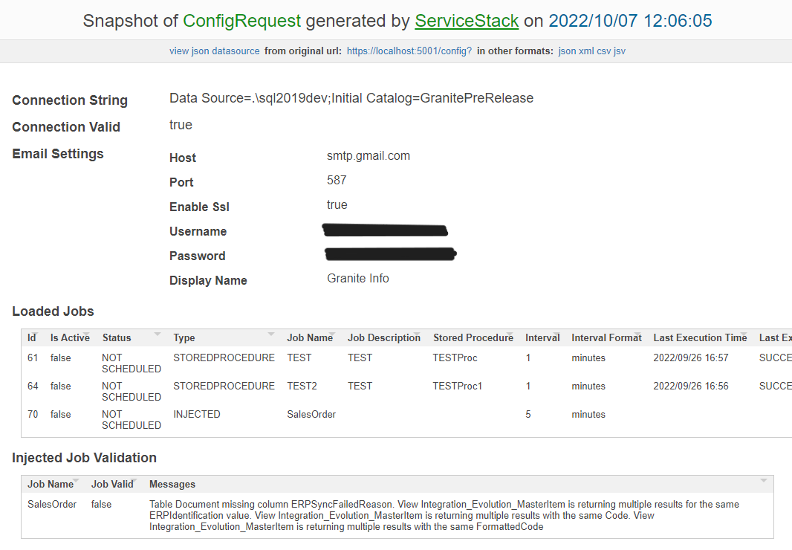

Integration Jobs
Integration jobs are a special type of Scheduler job called injected jobs. See below for information for specifics on how document and master data jobs work
Supported document types
-
ORDER
Accpac type: Sales Order
-
RECEIVING
Accpac type: Purchase Order
-
INTRANSIT
Accpac type: Transit Transfer
-
RECEIPT
Accpac type: Transit Receipt
-
TRANSFER
Accpac type: Transfer
-
WORKORDER
Accpac type: Assemblies
How it works
Document jobs
Triggers on the ERP document tables insert a record into the Granite IntegrationDocumentQueue table whenever a change is applied to a document.
GraniteScheduler runs injected jobs that monitor the IntegrationDocumentQueue table for records that need to be processed.
When a record with Status 'ENTERED' is found, the job uses views on the Granite database to fetch the information related to that document from the ERP database and apply the changes to the Granite document.
All valid changes to data in the Granite tables are logged to the Audit table, showing the previous value and the new value.
If a change is made in the ERP system that would put Granite into an invalid state, no changes are applied. Instead, the ERPSyncFailed field is set to true and the ERPSyncFailedReason field shows the reason for the failure. The IntegrationLog table will contain futher details on the failure if applicable.
Master data jobs
MasterItems and TradingPartners have their own jobs. These jobs compare the results of their respective views to the data in the Granite tables and insert new records / update records as needed.
The document jobs themselves also sync changes to the TradingPartners & MasterItems that are on the document. This means that on sites that do not process a lot of changes to master data you can limit the MasterItem/TradingPartner jobs to running once a day or even less frequently. The only thing they are really still needed for is setting isActive to false when something is deactivated in the ERP system.
Install
Note
If you are upgrading from the old StoredProcedure/Trigger integration, ensure that ERPIdentification (Document, DocumentDetail, MasterItem, TradingPartner) column is populated with correct values before attempting to start the new jobs
Set up database triggers, views, and data
Warning
The all in one script is planned for release with V6. Until then use the existing individual scripts at Dropbox\Granite Releases\Granite V5.0\GraniteDatabase\Accpac\ScheduledJobs
Run the AccpacIntegrationJobs_Create.sql script to create all the views, triggers and ScheduledJob table entries needed.
Add the Injected job files to GraniteScheduler
To add the injected job files to the GraniteScheduler, simply copy the dlls and xml files into the root folder of GraniteScheduler.
Example:

Configure
Initial Import
Warning
This is V6 functionality - not yet available.
When you first set up a new site, there will be documents that are partially processed already in Accpac. The following document types now support setting an initial ActionQty:
- Intransit
- PurchaseOrder
- Receipt
- SalesOrder
- Transfer
When ActionQty is a column returned by these types' Detail view, the ActionQty will be set to the same in Granite when the lines are inserted. This ensures that users cannot action more than the actual outstanding qty on the document.
Note
ActionQty will ONLY be used on insert of document lines, never on update as this would cause problems once the document is actioned in Granite.
The ActionQty column should be removed from the detail views after the initial import has completed syncing documents.
You can use the InitialImport.sql script to enter all of the Accpac documents not in a COMPLETE/CANCELLED statue into the IntegrationDocumentQueue table. The job will then pick these up and insert them once it is enabled.
Note
Reminder, ActionQty column should be removed from the detail views after the initial import is finished running.
Schedule configuration
See the GraniteScheduler manual for the details on how to configure injected jobs. Most of the work will have already been done for you by the AccpacIntegrationJobs_Create.sql script, you can simply activate the jobs you want to run.
Sometimes when the documents in Accpac are very large, the lines will not be finished inserting before we start fetching the records to create in Granite.
To circumvent this issue, we have a setting that allows you to configure an offset for the LastUpdateDateTime field in the IntegrationDocumentQueue table.
To configure this you simply add an entry into the ScheduledJobInputs table with the Name LastUpdateTimeOffset and the Value in minutes that you want to offset by
| JobName | Name | Value |
|---|---|---|
| SalesOrderJob | LastUpdateTimeOffset | 5 |
Using this example, the SalesOrderJob will only pick up documents that have been sitting in the IntegrationDocumentQueue for longer than 5 minutes at the time the job runs. This should give Accpac the time it needs to insert all of the lines on a very large document.
Email on Error
Note
Emailing functionality is now handled by the Utility API, set up has changed from previous versions.
Ensure that you have configured the UtilityApi for the Accpac injected jobs in the SystemSettings table:
| Application | Key | Value |
|---|---|---|
| Granite.Integration.Accpac.Job | UtilityApi | https://localhost:5001/ |
Ensure you have the IntegrationError email template in your database. This is the email template that is used for all error notifications in these injected jobs.
Then for each job that needs to send failure notifications, add a job input for MailOnError and MailOnErrorToAddresses:
| JobName | Name | Value |
|---|---|---|
| < JobName goes here > | MailOnError | true |
| < JobName goes here > | MailOnErrorToAddresses | name@client.co.za;name2@client.co.za |
View customisation
Each view can be customised to include custom logic or map extra fields to fields on the corresponding Granite table.
All of the standard fields on Granite tables are supported, simply add the required field to your view with an alias matching the Granite field name on the table the view maps to.
Non standard fields are also supported, but for these to work your column name on the destination table must start with 'Custom'. On the view, simply alias the name of the field to match the name of the field on the destination Granite table, including the 'Custom' prefix.
For fields like Document.Status where you may have custom rules / statuses, use a CASE statement in your view definition so that the view returns the Status that you want to set on the Granite Document table.
It is highly advised that you check the validity of yor job on the GraniteScheduler /config page after making a change to your view! Especially after changing filter criteria/joins, your view may be returning duplicate rows - the job validation will bring this to your attention.
Upgrading to version 6
Warning
This section applies only to upgrading to version 6, which is not yet released.
There are some significant changes that you need to be aware of when upgrading your injected jobs from an earlier version to version 6. When you upgrade, be sure to follow all of the steps below to ensure that all the new changes are applied.
Upgrade Scheduler to version 6
In version 6 there are changes to the contract between the Scheduler and the injected jobs. This means that in order to run version 6 of the injected jobs, you will need to be using the version 6 release of the Scheduler.
Older versions of the Scheduler will not be able to support the version 6 injected jobs.
Copy in new dlls
Copy the new dlls from the Accpac injected job folder to replace the old ones.
Replace triggers
All triggers have been updated to cater to documents deleted in Accpac. You should apply the new triggers so that when documents are deleted in Accpac, they are set to CANCELLED status in Granite.
Update views
Almost all of the views have been updated based on feedback from sites using the injected jobs. These changes include better handling of null values, as well as better mapping of document statuses.
A few views also have the ActionQty field added.
If your site is already live, be sure not to add the ActionQty field to your views
With version 6 we have introduced the ability to set the ActionQty on insert for document types that support it.
This is intended for the initial import of open documents when taking a site live - it prevents Granite from being able to action what has already processed in Accpac before the go live.
The ActionQty column is present in the views that support it by default.
If you are upgrading it is best to create the views without the ActionQty column.
What's different about Accpac jobs
Inserting lines between existing lines in Accpac
If enough lines are added in between existing lines on an Accpac document, existing line numbers can change. This will break the document in Granite as we lose the reference to the specific line in Accpac. Luckily, this can be easily avoided by ensuring that the Accpac user modifying documents is trained to only ever add new lines at the bottom.
Things to look out for
Importance of ERPIdentification
The injected jobs use the ERPIdentification column on the Document, DocumentDetail and MasterItem tables to look for matching records in the corresponding view. It is very important that you ensure that these values are populated for all records in Granite if you are upgrading from the old Document stored procedures.
Validation
Each job type has it's own validation criteria that must be passed before the job will execute. You can check the validity of injected jobs on the GraniteScheduler /config page.
Here is an example of some failed validation:
